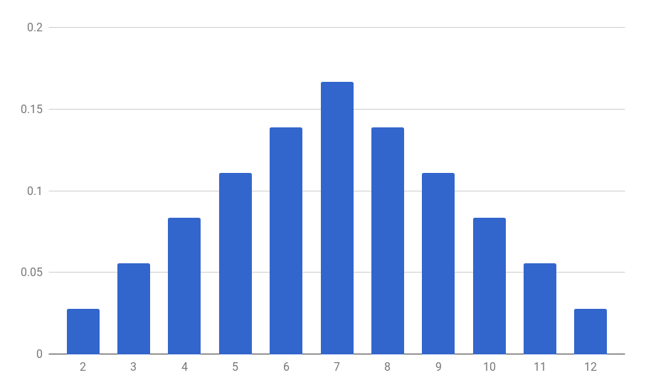

Jusqu'ici nous avons parlé d'ensembles (univers, événements). Il est donc naturel de construire des fonctions entre espaces probabilisables, c'est la notion de variable aléatoire. Cela est notamment utile quand on calcule une quantité qui dépend du résultat d'une expérience aléatoire (gains à un jeu de pile de face, somme des valeurs de deux dés, etc).
Variable aléatoire
Soient $(\Omega, \mathcal{A})$ et $(E, \mathcal{E})$ des espaces probabilisables. Une variable aléatoire sur $\Omega$ à valeurs dans $E$ est une fonction $X : \Omega \to E$ telle que pour tout événement $B \in \mathcal{E}$, on a
Pour alléger les notations, l'événement $X^{-1}(B)$ sera noté $X \in B$. Dans le cas où $B = \set{b}$, on notera même $X = b$ pour $X^{-1}(\{b\})$.
Moralement, on peut penser à $X$ comme une variable (à valeurs dans l'ensemble $E$) qui est tirée au hasard. C'est ce qui explique le nom de variable aléatoire.
La condition que $X^{-1}(B) \in \mathcal{A}$ pour tout $B \in \mathcal{E}$ signifie que la fonction $X$ est mesurable. Dans la plupart des exemples que l'on considère dans ce cours, l'ensemble $\Omega$ est fini et la tribu $\mathcal{A}$ est l'ensemble $\mathcal{P}(\Omega)$ de toutes les parties de $\Omega$. Dans ce cas, on peut oublier la condition de mesurabilité, qui sera automatiquement vérifiée. Et dans le cas général, il est assez difficile de fabriquer une fonction $X$ qui ne serait pas mesurable (on doit au mathématicien italien Guiseppe la construction en 1905 du premier exemple d'un ensemble non mesurable).
Pile je gagne, face tu perds
On joue à pile ou face, le joueur lance une pièce de monnnaie, si elle tombe sur pile, il gagne 1€, sinon il perd 1€. L'univers associé à cette expérience aléatoire est $\Omega = \set{\pile, \face}$. On peut définir sur $\Omega$ la variable aléatoire $X : \Omega \to \set{-1,1}$ qui représente le gain du joueur, en posant
$$X(\pile) = 1, \qquad X(\face) = -1$$
Somme de deux dés
On lance deux dés, on note $S$ la variable aléatoire qui représente la somme des valeurs des dés.
Formellement, l'univers de notre expérience est $\Omega = \ints{1,6}^2$. Cela veut dire qu'on considère la fonction $S : \Omega \to \N$ définie pour $\omega = (x,y) \in \Omega$ par
$$S(\omega) = x + y$$
Le Scrabble
On joue au Scrabble, on tire une lettre au sort dans le sachet. On note $V$ la variable aléatoire qui représente la valeur en points de la lettre (en français).
Formellement, on a donc $\Omega = \set{A, B, C, \ldots, Y, Z, \text{joker}}$, et $V(A) = 1$, $V(B) = 3$, $V(C) = 3$, $V(D) = 2$, …, $V(Z) = 10$ et $V(\text{joker}) = 0$ (voir ici pour la liste complète).
Temps d'arrêt
On lance une pièce jusqu'à ce qu'on fasse pile. On note $N$ la variable aléatoire qui représente le nombre de lancers qu'on a fait (et on pose $N = +\infty$ dans l'éventualité où on ne tombe jamais sur pile).
Variable discrète, réelle
Si l'ensemble $E$ des valeurs d'une variable aléatoire est fini ou dénombrable, on dira que la variable est discrète. Si $E = \R$ on parlera d'une variable aléatoire réelle. Il est même possible de prendre un espace vectoriel (comme par exemple $E = \R^n$) pour ensemble des valeurs de la variable, on parle alors de vecteur aléatoire. Pour des raisons de simplicité, on étudiera principalement les variables aléatoires discrètes dans ce cours.
Loi d'une variable aléatoire
Loi d'une variable aléatoire
Soit $(\Omega, \mathcal{A}, \P)$ un espace probabilisé, $(E, \mathcal{E})$ un espace probabilisable, et $X : \Omega \to E$ une variable aléatoire sur $\Omega$ à valeurs dans $E$. Alors la fonction
$$\begin{align*}
\P_X : \mathcal{E} & \longrightarrow [0,1] \\
\qquad B & \longmapsto \P(X \in B)
\end{align*}$$
est une probabilité sur l'espace probabilisable $(E, \mathcal{E})$, appelée loi de la variable $X$.
On fera attention au fait que la loi d'une variable aléatoire est une probabilité sur l'ensemble $E$ des valeurs et pas sur l'espace de départ $\Omega$. C'est d'ailleurs un des grands bénéfices pratiques de la notion de variable aléatoire, elle permet parfois de laisser un flou artistique sur l'ensemble $\Omega$ (potentiellement complexe) pour se concentrer sur l'ensemble des valeurs.
Bien souvent, on commet l'abus de confondre une variable aléatoire avec sa loi (en toute impunité avouons-le) mais il faut bien comprendre que des variables aléatoires distinctes peuvent avoir la même loi. Par exemple, sur $\Omega = \set{\pile, \face}$ on peut définir les variable aléatoires $X, Y : \Omega \to \set{-1,1}$ par
Dans le cas d'une variable aléatoire discrète, la loi de $X$ est entièrement déterminée par les valeurs $\P(X = e)$ pour $e \in E$. En effet, si $B \in \mathcal{E}$, alors on peut calculer $\P(X \in B)$ avec la formule :
$$\P(X \in B) = \sum_{b \in B} \P(X = b)$$
En particulier les valeurs $\P(X = e)$ doivent avoir $1$ pour somme :
$$\sum_{e \in E} \P(X = e) = \P(\Omega) = 1$$
Variable discrète et probabilités totales
Remarquons que si $X : \Omega \to E$ est une variable aléatoire sur l'espace probabilisé $(\Omega, \mathcal{A}, \P)$, alors la famille d'événements $(X = e)_{e \in E}$ forme une partition de $\Omega$. Alors d'après la formule des probabilités totales, pour tout événement $A \in \mathcal{A}$, on a
$$\P(A) = \sum_{e \in E, \ \P(X = e) \ne 0} \P(A | X = e) \cdot \P(X = e)$$
Par exemple, on peut réinterpréter le calcul fait dans cet exercice en termes de variables aléatoires. On lance un dé dix fois de suite. Si on note $N$ l'indice du premier lancer auquel on obtient un $6$, en prenant $N = 11$ si on ne fait jamais 6 (notons d'ailleurs que si la variable aléatoire $X_i$ désigne le résultat du $i$-ième lancer de dé, alors $N = \min \set{i \in \ints{1,10}, X_i = 6}$). Alors les événements $(N = n)_{1 \le n \le 11}$ forment une partition de l'univers $\Omega$. Si $B$ désigne l'événement "faire au moins un 6", d'après la formule des probabilités totales, on a
On joue (sans tricher) au Monopoly. On lance deux dés, on note $S$ la variable aléatoire qui représente la somme des valeurs des dés. Au chapitre précédent, on a calculé $\P(S = 7) = \frac{1}{6}$ et $\P(S = 5) = \frac{1}{9}$. Pour dénombrer combien de fois on tombe sur chaque valeur de la somme, on peut représenter toutes les possibilités dans un tableau croisé :
+
1
2
3
4
5
6
1
2
3
4
5
6
7
2
3
4
5
6
7
8
3
4
5
6
7
8
9
4
5
6
7
8
9
10
5
6
7
8
9
10
11
6
7
8
9
10
11
12
En comptant le nombre de fois que chaque somme apparaît (1 fois pour $S=2$, 2 fois pour $S=3$ et ainsi de suite), on obtient toutes les valeurs des probabilités $\P(S=k)$. On peut d'ailleurs calculer que pour $2 \le k \le 12$, on a
$$\P(S = k) = \frac{6 - |k-7|}{36}$$
On peut résumer dans un tableau
$k$
2
3
4
5
6
7
8
9
10
11
12
$\P(S = k)$
$\frac{1}{36}$
$\frac{2}{36}$
$\frac{3}{36}$
$\frac{4}{36}$
$\frac{5}{36}$
$\frac{6}{36}$
$\frac{5}{36}$
$\frac{4}{36}$
$\frac{3}{36}$
$\frac{2}{36}$
$\frac{1}{36}$
On peut visualiser le résultat par un histogramme

Histogramme représentant la loi de la somme de deux dés
Score au Scrabble
On reprend l'exemple du jeu de Scrabble et on considère le tirage d'une lettre dans un sachet où on aurait mis une lettre de chaque type. On considère la variable aléatoire $V$ qui désigne sa valeur en points. On a $(V = 0) = \set{\text{joker}}$, donc $\P(V = 0) = \frac{1}{27}$. On a $(V = 1) = \set{A, E, I, L, N, O, R, S, T, U}$, donc $\P(V = 1) = \frac{10}{27}$ … $\P(V = 10) = \frac{5}{27}$
$k$
0
1
2
3
4
5
6
7
8
9
10
$P(V = k)$
$\frac{1}{27}$
$\frac{10}{27}$
$\frac{3}{27}$
$\frac{3}{27}$
$\frac{3}{27}$
$0$
$0$
$0$
$\frac{2}{27}$
$0$
$\frac{5}{27}$
Pour trouver la loi de $V$ dans un vrai sachet de Scrabble on devrait tenir compte du nombre de lettres de chaque type présentes dans le sachet. On pourrait se demander à quel point le nombre de lettres de chaque type et leur valeur reflètent leur fréquences dans la langue française.
Temps nécessaire pour faire un 6
On lance un dé. Tant qu'on ne fait pas 6, on recommence. On considère la variable aléatoire $N$ qui désigne le nombre de lancers qu'on fait (et on considère que $N = +\infty$ si on ne fait jamais $6$). On calcule alors pour tout $k \in \N$,
Dans le cas d'une variable aléatoire réelle $X$, la loi de $X$ peut être caractérisée par la fonction $F_X : x \mapsto \P(X \le x)$, qu'on appelle la fonction de répartition de $X$.
Fonction de répartition, densité
Soit $(\Omega, \mathcal{A}, \P)$ un espace probabilisé et $X : \Omega \to \R$ une variable aléatoire réelle. On appelle fonction de répartition de $X$, la fonction réelle $F_X : \R \to [0,1]$ définie pour $x \in \R$ par
$$F_X(x) = \P(X \le x)$$
Si la fonction $F_X$ est $\mathcal{C}^1$, on dit que la variable $X$ admet une densité. On appelle alors densité de probabilité la fonction $p_x : \R \to \R$ dérivée de $F_X$ :
$$p_X = F_X'$$
Si $X$ admet une densité $p_X$, alors on a
$$\P(a \le X \le b) = \int_a^b p_X(u) \, du$$
Indépendance de variables aléatoires
On dira que deux variables aléatoires $X$ et $Y$ sont indépendantes si les événements $(X \in B)$ et $(Y \in C)$ sont indépendants pour tous événements $B$ et $C$, ce qui revient à demander que la loi jointe de la variable $(X,Y)$ soit le produit des lois de $X$ et $Y$.
Indépendance de variables aléatoires
Soit $(\Omega, \mathcal{A}, \P)$ un espace probabilisé et $(X_i)_{i \in I}$ une famille de variables aléatoires toute définies sur $\Omega$. On dira que les $X_i$ sont indépendantes si pour toute partie finie $J \subset I$ on a
En particulier, deux variables aléatoires discrètes $X : \Omega \to E_1$ et $Y : \Omega \to E_2$ sont indépendantes si pour tout $(x,y) \in E_1 \times E_2$, on a
$$\P(X = x, Y = y) = \P(X = x) \cdot \P(Y = y)$$
Remarquons que l'indépendance des variables aléatoires revient à demander l'indépendance mutuelle des événements $(X_i = x_i)_{i \in I}$ pour toutes valeurs $(x_i) \in \prod_{i \in I} E_i$ (et pas seulement l'indépendance 2 à 2).
L'indépendance des variables aléatoires correspond à la notion intuitive que la valeur de l'une des variables ne dépend pas des autres.
Lancers successifs de dés
On lance un dé deux fois de suite. Soit $X_1$ la valeur obtenue au premier lancer, et $X_2$ la valeur obtenue second lancer. On comprend intuitivement que $X_1$ et $X_2$ sont indépendants : la valeur du premier lancer n'a a priori aucune influence sur celle du second lancer. Mais pour se familiariser avec la définition, donnons la preuve formelle. Alors pour $i \in \ints{1,6}$ fixé, on a
donc les variables $X_1$ et $X_2$ sont indépendantes. Plus généralement, si on lance un dé successivement $n$ fois et qu'on note $X_i$ le résultat du $i$-ième lancer, alors les variables $(X_{i})_{1 \le i \le n}$ sont indépendantes.
Lois usuelles
Dans cette partie, on dresse une liste non exhaustive de lois de variables aléatoires discrètes que l'on rencontre fréquemment.
Loi uniforme
Pour $X$ une variable aléatoire à valeurs dans un ensemble fini $E$, on dit que la variable aléatoire $X$ suit une loi uniforme sur $E$ si toutes les valeurs sont équiprobables. On a alors pour tout $x \in E$ la probabilité $\P(X = x) = \frac{1}{|E|}$.
En particulier si $X$ suit la loi uniforme sur $\ints{a,b}$ on a $\P(X = k) = \frac{1}{b-a+1}$ pour tout $a \le k \le b$.
On lance un dé cubique homogène à 6 faces numérotées de 1 à 6. On note $D$ la variable aléatoire qui représente le résultat du lancer. Alors la variable $D$ suit une loi uniforme sur $\ints{1,6}$.
Loi de Bernoulli
On dit que la variable aléatoire $X$ suit une loi de Bernoulli si la variable est à valeurs dans $\set{0,1}$. La valeur $p = \P(X = 1)$ est appelée le paramètre de la loi (ou on dit encore que $X$ suit une loi de Bernoulli de paramètre $p$). On a $\P(X = 0) = 1-p$.
Si $X$ est une variable aléatoire à valeurs dans $\set{-1,1}$, on dira qu'elle suit une loi de Rademacher de paramètre $p = \P(X = 1)$. On a alors $\P(X = -1) = 1 -p$.
Les deux lois sont reliées. En effet on remarque que $X$ suit une loi de Bernoulli de paramètre $p$ si et seulement si $2X-1$ suit une loi de Rademacher de paramètre $p$.
On tire une carte au hasard dans un paquet de 52 cartes, on note $X$ la variable aléatoire qui vaut $1$ si la carte tirée est un roi, et $0$ sinon. Alors $X$ suit une loi de Bernoulli de paramètre $\P(X=1) = \P(\text{"tirer un roi"})= \frac{4}{52} = \frac{1}{13}$.Une urne contient 99 boules noires et une boule blanche. On tire une boule au hasard dans l'urne et on note $B$ la variable aléatoire qui vaut $1$ si la boule est blanche, et $0$ sinon. Alors la variable $B$ suit une loi de Bernoulli de paramètre $\frac{1}{100}$.On joue à deux à un jeu de pile ou face avec une pièce de monnaie équilibrée. Chacun mise 1€, et si la pièce tombe sur pile, je remporte les mises, sinon l'autre joueur les remporte. Alors la variable $G$ qui représente mon gain (négatif si je perds) suit une loi de Rademacher de paramètre $\frac{1}{2}$.
Loi binomiale
C'est la loi que suit une somme de variables de Bernoulli indépendantes. Précisément, si $(X_i)_{1 \le i \le n}$ est une famille de $n$ variables de Bernoulli indépendantes de même paramètre $p \in [0,1]$, on dira que la variable
$$Y = \sum_{i = 1}^n X_i$$
suit une loi binomiale de paramètres $(n,p)$. La variable $Y$ prend ses valeurs dans $\ints{0,n}$, et pour tout $k \in \ints{0,n}$, on a
$$\P(Y = k) = \binom{n}{k} p^k (1-p)^{n-k}$$
où le nombre $\binom{n}{k}$, appelé coefficient binomial "k parmi n", est donné par la formule
La loi binomiale apparaît pour le nombre de succès lorsqu’on répète une même expérience aléatoire dont la probabilité de succès est $p$.
On lance une pièce équilibrée $10$ fois et on note $N$ la variable aléatoire qui représente le nombre de lancers tombés sur face. Alors $F$ suit une loi binomiale de paramètres $(10, 1/2)$ : en effet, si on note $X_i$ la variable aléatoire qui vaut $1$ si on fait face au $i$-ième lancer et $0$ sinon, alors chaque $X_i$ suit une lois de Bernoulli de paramètre $\frac{1}{2}$, les $X_i$ sont indépendantes, et on a
$$F = \sum_{i = 1}^{10} X_i$$
Si $k \le n$, la probabilité d'avoir obtenu $k$ fois face est donnée par
$$\P(F = k) = \binom{10}{k} \left(\frac{1}{2}\right)^k \cdot \left(1-\frac{1}{2} \right)^{10-k} = \frac{1}{2^{10}}\binom{10}{k}$$
car il faut faire $k$ lancers avec face, $10-k$ lancers avec pile, et il y a $\binom{10}{k}$ façons de choisir les $k$ lancers parmi $10$ qui ont donné face.
Loi géométrique
On dit que la variable $X$ suit une loi géométrique de paramètre $p \in [0,1]$ si $X$ est à valeurs dans $\N^*$ et si pour tout $n \in \N^*$, on a
$$\P(X = n) = p (1-p)^{n-1}$$
La loi géométrique apparaît comme le temps nécessaire pour obtenir un premier succès lorsqu’on répète une même expérience aléatoire dont la probabilité de succès est $p$. Formellement, si $(X_n)_{n \in \N}$ est une suite de variables aléatoires de Bernoulli de paramètre $p$ et indépendantes, alors la variable aléatoire
$$N = \min \set{n \in \N, X_n = 1}$$
suit une loi géométrique de paramètre $p$. On remarque que la somme des probabilités $\P(X = n)$ pour $n$ variant dans $\N$ fait bien à $1$ au total :
$$
\begin{align*}
\sum_{n = 1}^{+\infty} \P(X = n) &= p \sum_{n = 1}^{+\infty} (1-p)^{n-1}\\
&= p \sum_{k = 0}^{+\infty} (1-p)^{k} \\
&= p \cdot \frac{1}{1- (1-p)} \\
&= 1
\end{align*}$$
On lance un dé de manière répétée jusqu'à ce qu'on fasse un $6$. Si on fait $6$ on s'arrête de lancer le dé, sinon on continue. On note $N$ la variable aléatoire qui représente le nombre de lancers qu'il a fallu. On vérifie que pour $n \in \N$, on a
$$\P(N = n) = \pars{\frac{5}{6}}^{n-1} \frac{1}{6}$$
car si on doit faire $n$ lancers pour atteindre 6, c'est qu'on a fait un 6 sur le dernier lancer (probabilité $1/6$) et autre chose qu'un 6 sur les $n-1$ premiers lancers (probabilité $5/6$ pour chacun). Donc la variable $N$ suit une loi géométrique de paramètre $\frac{1}{6}$.
Loi de Poisson
On dit qu'une variable aléatoire suit une loi de Poisson de paramètre $\lambda > 0$ si $X$ est à valeurs dans $\N$ et pour tout $k \in \N$ on a
$$\P(X = k) = e^{-\lambda} \frac{\lambda^k}{k!}$$
On vérifie que la somme des probabilités $\P(X = k)$ vaut bien $1$ au total :
Une utilité de la loi de Poisson est qu'elle permet d'approximer la loi binomiale. Précisément, si $n$ est très grand et $p$ petit, la loi binomiale de paramètre $(n, p)$ est proche de la loi de Poisson de paramètre $\lambda = np$. En conséquence, la loi de Poisson permet notamment de modéliser le nombre d'occurence d'un phénomènes rare ($p$ petit) dans une grande population ($n$ grand).
Initialement cantonnée à modéliser des événements rares comme les arrivées de bateaux dans un port ou les accidents dus aux coups de pied de cheval dans les armées (source Wikipédia), son champ d'applications s'est considérablement élargi depuis, et on l'utilise désormais pour modéliser de nombreux phénomènes comme la charge d'un réseau de télécommunication (nombre de personnes connectées à un moment donnée), la durée de vie de composant électroniques, le temps de vie d'une particule radioactive, le taux de mutations aléatoires, la demande de passagers pour un avion, la probabilité de défaut d'un crédit (probabilité qu'une personne ne puisse pas rembourser son crédit), etc.
Moments d'une variable aléatoire
Espérance
Soit $X : \Omega \to E$ une variable aléatoire discrète dont les valeurs sont des nombres (c'est-à-dire que l'ensemble $E$ des valeurs de $X$ est un sous-ensemble discret de $\R$). Alors l'espérance de la variable $X$ est la quantité
$$\E(X) = \sum_{x \in E} x \cdot \P(X = x)$$
Si l'ensemble $E$ est infini, cette somme comprend potentiellement une infinité de termes. Si la somme comprend un nombre fini de termes non nuls, ou bien en comprend une infinité mais converge, on dit que $X$ admet une espérance.
L'espérance représente la valeur moyenne prise par une variable aléatoire. Une variable aléatoire d'espérance nulle est dite centrée. Étant donnée une variable aléatoire $X$ admettant une espérance, on peut se ramener à une variable centrée en considérant la variable décalée $X - \E(X)$.
On tire un dé à 6 faces, on note $D$ la variable aléatoire qui représente la valeur obtenue. La variable $D$ suit une loi uniforme dans $\ints{1,6}$. Son espérance est
$$
\begin{align*}
\E(D) &= 1 \times \P(D = 1) + 2 \times \P(D = 2) + 3 \times \P(D = 3) + 4 \times \P(D = 4) + 5 \times \P(D = 5) + 6 \times \P(D = 6) \\
&= 1 \times \frac{1}{6} + 2 \times \frac{1}{6} + 3 \times \frac{1}{6} + 4 \times \frac{1}{6} + 5 \times \frac{1}{6} + 6 \times \frac{1}{6} \\
&= \frac{1+2+3+4+5+6}{6} \\
&= \frac{6\times 7}{2 \times 6} \\
&= \frac{7}{2} \\
&= 3,5
\end{align*}
$$
Cela veut par exemple dire que si l'on tire le dé un grand nombre de fois, la moyenne des résultats que l'on fera sera proche de cette valeur de $3,5$.
Pouvez-vous de la même manière calculer l'espérance de la valeur prise par un dé à 4 faces ? 12 faces ? À 20 faces ?
On calcule que l'espérance de la valeur obtenue est de $\frac{5}{2} = 2,5$ pour un dé à $4$ faces, $\frac{13}{2} = 6,5$ pour un dé à $12$ faces, et $\frac{21}{2} = 6,5$ pour un dé à $20$ faces.
Il peut être utile de remarquer que l'espérance est linéaire
$$\E(\lambda \cdot X + \mu \cdot Y) = \lambda \cdot \E(X) + \mu \cdot \E(Y)$$
Ainsi l'espérance d'une somme de variables aléatoires se calcule facilement en calculant l'espérance de chacune des variables.
Retour sur le monopoly
On lance deux dés à 6 faces, et on note $S$ la variable aléatoire qui représente la somme des valeurs de deux dés. On peut calculer l'espérance de $S$ de deux manières : soit en utilisant la loi de la variable aléatoire (qui a été calculée précédemment), soit en utilisant la linéarité de l'espérance. Commençons par la première méthode. La loi de la variable $S$ est donnée dans le tableau suivant.
$k$
2
3
4
5
6
7
8
9
10
11
12
$\P(S = k)$
$\frac{1}{36}$
$\frac{2}{36}$
$\frac{3}{36}$
$\frac{4}{36}$
$\frac{5}{36}$
$\frac{6}{36}$
$\frac{5}{36}$
$\frac{4}{36}$
$\frac{3}{36}$
$\frac{2}{36}$
$\frac{1}{36}$
On peut alors calculer l'espérance de $S$ :
$$
\begin{align*}
\E(S) &= \sum_{k = 2}^{12} k \cdot \P(S = k) \\
&= \frac{2 \times 1 + 3 \times 2 + 4 \times 3 + 5 \times 4 + 6 \times 5 + 7 \times 6 + 8 \times 5 + 9 \times 4 + 10 \times 3 + 11 \times 2 + 12 \times 1}{36} \\
&= \frac{252}{36} \\
&= 7
\end{align*}
$$
On peut calculer l'espérance de $S$ par linéarité de l'espérance. En effet, si les variables aléatoires $D_1$ et $D_2$ représentent le résultat des dés $1$ et $2$ respectivement, alors $S = D_1 + D_2$ et donc
$$\E(S) = \E(D_1 + D_2) = \E(D_1) + \E(D_2) = \frac{7}{2} + \frac{7}{2} = 7$$
où le calcul de l'espérance de $D_1$ et $D_2$ a été fait précédemment.
Variance et écart type
La variance d'une variable aléatoire est une mesure de l'éparpillement des valeurs de la variable autour de la moyenne. Précisément, c'est la moyenne des carrés de ses écarts à la moyenne.
Soit $X : \Omega \to \E$ une variable aléatoire discrète à valeurs numériques. On suppose que $X$ admet une espérance. Alors la variance de $X$ est définie par
$$\V(X) = \E\left((X-\E(X))^2\right) = \sum_{x \in E} (x-\E(x))^2 \cdot \P(X = x)$$
Il s'agit d'une quantité positive. On définit l'écart type comme la racine carrée de la variance
$$\sigma(X) = \sqrt{\V(X)}$$
Soit $X$ une variable aléatoire qui admet une variance. Alors, on a
$$\V(X) = \E(X^2) - \E(X)^2$$
Pour rendre le calcul plus lisible, notons $m = \E(X)$. On a
$$
\begin{align*}
\V(X) &= \E\left( (X-m)^2 \right) \\
&= \E\left( X^2 - 2 m X + m^2 \right) \\
&= \E\left(X^2 \right) - 2m \E(X) + \E\left(m^2\right) \\
&= \E\left(X^2\right) - 2m^2 + m^2 \\
&= \E\left(X^2\right) - m^2 \\
&= \E(X^2) - \E(X)^2
\end{align*}
$$